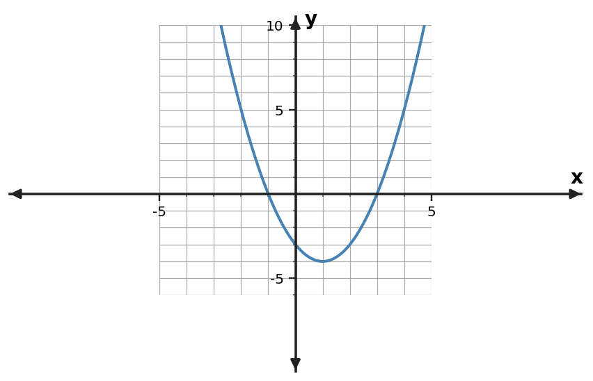

Learning Target
Students will compare standard, vertex, and factored forms of quadratic functions and determine which form best reveals key features.
- I can construct equivalent quadratic forms to reveal different key features.
- I can interpret standard, vertex, and factored forms to read key features of quadratic functions.
- I can critique which quadratic form best supports a given question or context.
Vocabulary / Key Notation Preview
standard form · vertex form · factored form · vertex · zeros
Sort the vocabulary. Write each vocabulary word in the column that best matches what you know right now. You may move a word later.
| Know for sure | Recognize | Don't know yet |
|---|---|---|
What's to Come
DO NOT SOLVE IT YET.
Circle anything familiar, underline symbols, labels, conditions, data, or features that seem important, and write short notes about what you think may matter later.
The graph represents one quadratic. Three equations for the same function are $y=x^2-2x-3$, $y=(x-1)^2-4$, and $y=(x+1)(x-3)$. Without treating one form as “best” in every situation, match each form to a feature it reveals most directly and support your choices with the graph.

Let's Get Started
Skim the section. Record what catches your attention before you read closely.
| What I noticed | |
|---|---|
| What I predict | |
| What I wonder |
READ IN SHORT CHUNKS.
Annotate the words and visuals together. Underline evidence, circle or highlight bold vocabulary, label arrows, measurements, or important features, connect sentences to figures, and jot short questions or connections in the margins.
I can construct equivalent quadratic forms to reveal different key features.
A quadratic function can be written in several equivalent forms. In standard form, $y=ax^2+bx+c$. In vertex form, $y=a(x-h)^2+k$. In factored form, $y=a(x-r_1)(x-r_2)$ when real factors are available. Each form describes the same function when the expressions are equivalent.
Changing form does not change the graph; it changes which structure is easiest to see. Expanding factored form reveals the coefficients in standard form. Factoring standard form can reveal zeros. Rewriting into vertex form can reveal the vertex, the turning point of the parabola.
For example, $(x+1)(x-5)$ expands to $x^2-4x-5$. Both equations generate the same output for every input, so they graph as the same parabola. The factored version makes zeros -1 and 5 visible, while the standard version makes the y-intercept -5 visible.
Constructing an equivalent form should serve a purpose. Before rewriting, identify the feature you want to reveal. This keeps algebraic manipulation connected to interpretation rather than turning conversion into an isolated procedure.
- What stays the same when a quadratic is rewritten into an equivalent form?
- Which feature is immediately visible from $y=(x+1)(x-5)$, and which is immediately visible from $y=x^2-4x-5$?
- Why should the question you are trying to answer influence whether you rewrite a quadratic?
| Form | General structure | Feature seen directly |
|---|---|---|
| Standard | $y=ax^2+bx+c$ | $y$-intercept $c$ |
| Vertex | $y=a(x-h)^2+k$ | Vertex $(h,k)$ |
| Factored | $y=a(x-r_1)(x-r_2)$ | Zeros $r_1,r_2$ |
Example 1: Rewrite in Standard Form
Rewrite $y=(x+1)(x-5)$ in standard form.
You Try It 1: Rewrite in Standard Form
Rewrite $y=(x-2)(x+4)$ in standard form.
I can interpret standard, vertex, and factored forms to read key features of quadratic functions.
Standard form $y=ax^2+bx+c$ gives one immediate point: when $x=0$, the terms containing $x$ vanish and $y=c$. Therefore the $y$-intercept is $(0,c)$. The sign and size of $a$ also influence opening direction and vertical scale, although the other key features may require more work.
Vertex form $y=a(x-h)^2+k$ centers the squared part at $x=h$. Because $(x-h)^2$ reaches its smallest value of 0 at $x=h$, the turning point is $(h,k)$. Be careful with the sign: $(x+4)^2+1$ is $(x-(-4))^2+1$, so its vertex is $(-4,1)$.
Factored form $y=a(x-r_1)(x-r_2)$ shows the zeros because each factor becomes zero at $r_1$ or $r_2$. Those zeros are the $x$-coordinates of the graph’s x-intercepts. Again, the sign in the factor is opposite the sign of the zero.
A graph provides a visual check for all three forms. The graph’s $y$-intercept should agree with standard form, its turning point should agree with vertex form, and its x-intercepts should agree with factored form. Equivalent forms are strongest when their visible features tell the same story.
- Why does the constant $c$ in standard form equal the y-intercept value?
- How do you read the vertex from $(x-h)^2+k$, especially when the parentheses show a plus sign?
- How can a graph be used to check features read from all three algebraic forms?
$y=x^2-2x-3$
$y$-intercept: $(0,-3)$
$y=(x-1)^2-4$
Vertex: $(1,-4)$
$y=(x+1)(x-3)$
Zeros: $-1,3$
All three forms describe one parabola. Use the form that exposes the needed feature.
Example 2: Read a Vertex
For $y=(x-2)^2-9$, state the vertex.
You Try It 2: Read a Vertex
For $y=(x+4)^2+1$, state the vertex.
Example 3: Read Zeros
For $y=(x+2)(x-5)$, state the zeros.
You Try It 3: Read Zeros
For $y=(x-1)(x+6)$, state the zeros.
Example 4: Read a y-Intercept
For $y=x^2-6x+5$, state the $y$-intercept.
You Try It 4: Read a y-Intercept
For $y=2x^2+3x-7$, state the $y$-intercept.
Example 5: Match Forms to Graph Features
The graph below has zeros -3 and 1. Which of these forms, $y=(x+3)(x-1)$ or $y=(x+1)^2-4$, reveals the zeros more directly? Which reveals the vertex more directly?

You Try It 5: Match Forms to Graph Features
For the same quadratic $y=x^2+2x-8=(x+4)(x-2)=(x+1)^2-9$, identify which form most directly reveals the $y$-intercept, zeros, and vertex.
I can critique which quadratic form best supports a given question or context.
No quadratic form is always best. The useful form depends on the information you need. If the question asks for zeros or x-intercepts, factored form usually gives the shortest path. If it asks for a maximum or minimum point, vertex form usually reveals that point directly.
Standard form is often convenient for reading the y-intercept and for carrying out familiar polynomial operations. It may also be the form supplied by a model or calculation. But choosing standard form to answer a zeros question can create unnecessary work if an equivalent factored form is already available.
A critique should be specific. Instead of saying “that form is bad,” name the requested feature, identify which form exposes it most directly, and explain what extra work the other choice would require. A form can be mathematically correct and still be inefficient for a particular question.
Contexts make this choice meaningful. A maximum height or minimum cost points toward vertex form; break-even inputs or times when a quantity reaches zero point toward factored form; an initial value at input 0 points toward standard form. The algebraic form becomes a tool for answering a question.
- Which form most directly reveals a maximum or minimum point? Which most directly reveals zeros?
- Why can a mathematically correct form still be an inefficient choice for a particular question?
- If a context asks for the value when the input is 0, which form often gives the most immediate information and why?
| Question asks for... | Usually start with... | Why |
|---|---|---|
| Zeros / x-intercepts | Factored form | Set each factor equal to zero. |
| Vertex / maximum / minimum | Vertex form | $(h,k)$ is visible. |
| y-intercept / value at $x=0$ | Standard form | $c$ is visible. |
Example 6: Critique a Form Choice
A student wants the maximum or minimum point of a quadratic and chooses factored form even though vertex form is available. Critique the choice.
You Try It 6: Critique a Form Choice
A student wants the $x$-intercepts and chooses standard form even though factored form is available. Critique the choice.
Summary
- Equivalent quadratic forms describe the same function but make different features easier to read.
- Standard form highlights the y-intercept, vertex form highlights the vertex, and factored form highlights zeros/x-intercepts.
- Choose and critique a form based on the question being asked, then use the graph or another form to check consistency.
Common Mistakes
| Watch for | Better check |
|---|---|
| Assuming one form is always best. | Match the form to the feature or question you need. |
| Reading the sign inside vertex or factored form incorrectly. | Use $(x-h)$ and $(x-r)$ structure carefully; solve the inside expression when needed. |
| Treating equivalent forms as different functions. | Check that they generate the same features and graph. |